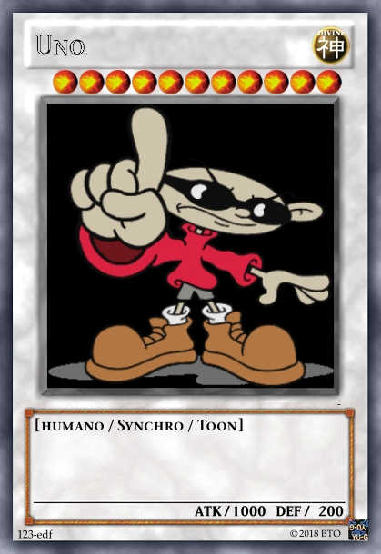
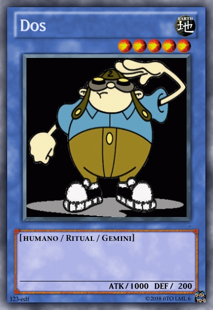
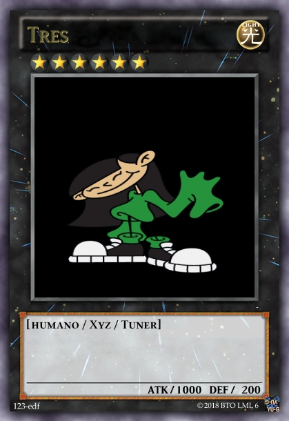
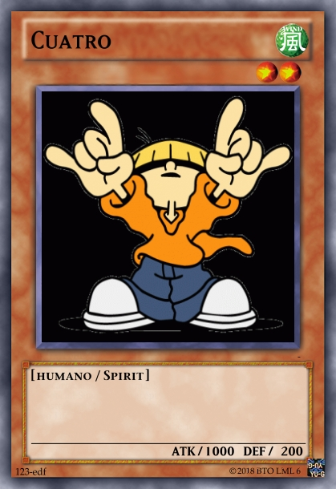
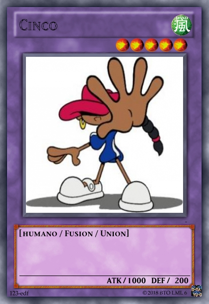

La serie, de contenido infantil y con caracteres tomados del género de espionaje y de aventuras; basada en la vida de un grupo de cinco niños (Sector V) que encaran la lucha sin cuartel contra la tiranía de los adolescentes y adultos que intentan imponer su disciplina y sus reglas a los niños de toda la Tierra. Al principio no aceptaban niñas. Su residencia es en la Casa del Árbol y allí toman sus decisiones como grupo aunque reciben órdenes del comando central ubicado en la Base Lunar. Su famoso lema es "Estás con nosotros o eres un viejo" y sino una más conocida "Somos los chicos del Barrio".
 
 
